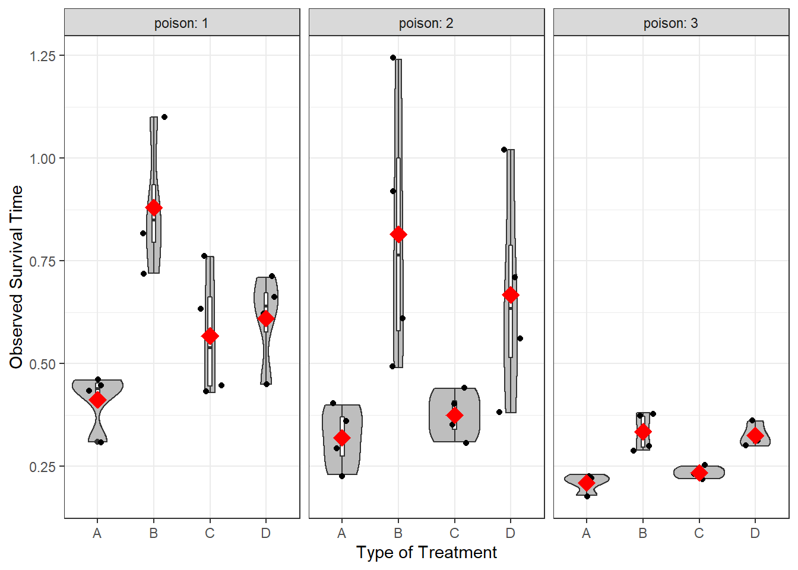
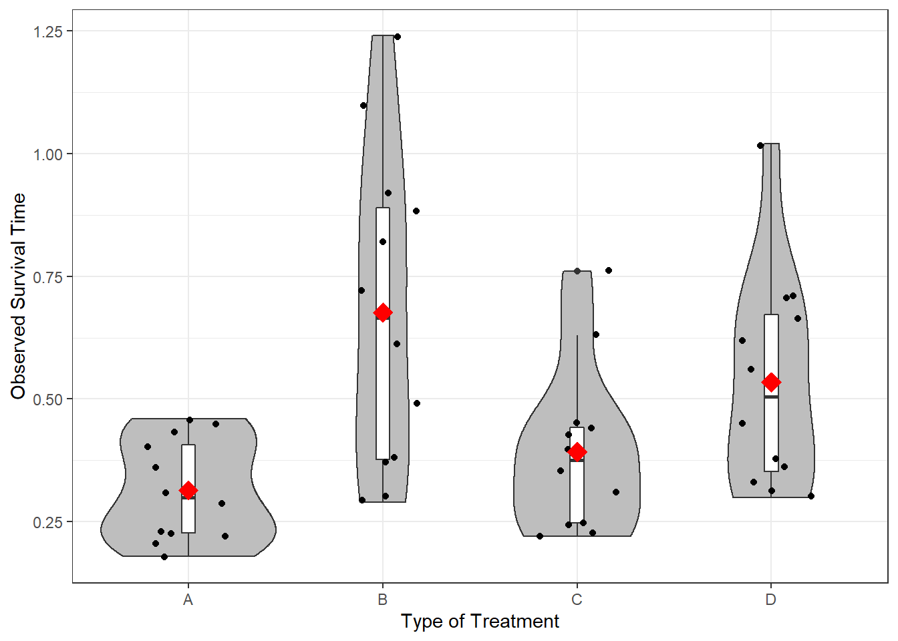

7 Mixed Design ANOVA
Required Packages
library(tidyverse) # Loads several very helpful 'tidy' packages
library(furniture) # Nice tables (by our own Tyson Barrett)
library(afex) # needed for ANOVA, emmeans is loaded automatically.
library(multcomp) # for advanced control for multiple testing/Type 1 error7.1 Tutorial - Fitting Mixed Design ANOVA Models with afex::aov_4()
The aov_4() function from the afex package fits ANOVA models (oneway, two-way, repeated measures, and mixed design). It needs at least two arguments:
formula:
continuous_var ~ group_var + (RM_var|id_var)one observation per subject for each level of theRMvar, so eachid_varhas multiple lines for each subject, each subject can only belong to exactly one group./dataset:
data = .we use the period to signify that the datset is being piped from above
Here is an outline of what your syntax should look like when you fit and save a Mixed ANOVA. Of course you will replace the dataset name and the variable names, as well as the name you are saving it as.
NOTE: The aov_4() function works on data in LONG format only. Each observation needs to be on its one line or row with seperate variables for the group membership (categorical factor or fct) and the continuous measurement (numberic or dbl).
# RM ANOVA: fit and save
aov_name <- data_name %>%
afex::aov_4(continuous_var ~ group_var + (RM_var|id_var),
data = .)7.2 Words Recalled Data Example (Chapter 16, section A)
7.2.1 Data Prep
I input the data as a tribble which saves it as a data.frame and then cleaned up a few of the important variables.
d <- tibble::tribble(
~ID, ~depression, ~word_type, ~words_recalled,
1, 0, 1, 20,
2, 0, 1, 16,
3, 0, 1, 8,
4, 1, 1, 17,
5, 1, 1, 15,
6, 1, 1, 10,
1, 0, 2, 21,
2, 0, 2, 18,
3, 0, 2, 7,
4, 1, 2, 15,
5, 1, 2, 10,
6, 1, 2, 4,
1, 0, 3, 17,
2, 0, 3, 11,
3, 0, 3, 4,
4, 1, 3, 18,
5, 1, 3, 13,
6, 1, 3, 10) %>%
mutate(depression = factor(depression,
labels = c("Not Depressed",
"Depressed"))) %>%
mutate(word_type = factor(word_type,
labels = c("Neutral", "Positive", "Negative")))
d# A tibble: 18 x 4
ID depression word_type words_recalled
<dbl> <fct> <fct> <dbl>
1 1 Not Depressed Neutral 20
2 2 Not Depressed Neutral 16
3 3 Not Depressed Neutral 8
4 4 Depressed Neutral 17
5 5 Depressed Neutral 15
6 6 Depressed Neutral 10
7 1 Not Depressed Positive 21
8 2 Not Depressed Positive 18
9 3 Not Depressed Positive 7
10 4 Depressed Positive 15
11 5 Depressed Positive 10
12 6 Depressed Positive 4
13 1 Not Depressed Negative 17
14 2 Not Depressed Negative 11
15 3 Not Depressed Negative 4
16 4 Depressed Negative 18
17 5 Depressed Negative 13
18 6 Depressed Negative 107.2.2 One-Way RM ANOVA
First, let’s ignore the depression variable and just look at the repeated measures. We do this by using afex::aov_4() and then the summary() functions as shown below.
oneway <- d %>%
afex::aov_4(words_recalled ~ 1 + (word_type|ID),
data = .)
summary(oneway)
Univariate Type III Repeated-Measures ANOVA Assuming Sphericity
Sum Sq num Df Error SS den Df F value Pr(>F)
(Intercept) 3042.00 1 381.33 5 39.8864 0.001466 **
word_type 16.33 2 68.33 10 1.1951 0.342453
---
Signif. codes: 0 '***' 0.001 '**' 0.01 '*' 0.05 '.' 0.1 ' ' 1
Mauchly Tests for Sphericity
Test statistic p-value
word_type 0.2134 0.045538
Greenhouse-Geisser and Huynh-Feldt Corrections
for Departure from Sphericity
GG eps Pr(>F[GG])
word_type 0.55972 0.3282
HF eps Pr(>F[HF])
word_type 0.6077293 0.3309148Here, we see a number of pieces of information, including the sums of squares, F-statistic, and p-value. The p-value suggests that there is not an effect of word_type here (p = .342).
Let’s plot this using a spaghetti plot.
d %>%
ggplot(aes(word_type, words_recalled, group = ID)) +
geom_line() +
geom_point()
But we wonder if depression has an effect on the number of words recalled, and it may interact with word_type. Let’s see what that looks like.
d %>%
ggplot(aes(word_type, words_recalled, group = ID,
color = depression,
shape = depression,
linetype = depression)) +
geom_line() +
geom_point() +
facet_wrap(~depression)
Definitely looks like the effect of word_type depends on whether the individual has depression or not. To add a between subjects factor to a repeated measures ANOVA, we are now doing mixed ANOVA (both between and within subjects factors).
7.2.3 Mixed ANOVA
To run a mixed ANOVA, use afex::aov_4() and then the summary() functions again but this type with the between subjects factor included.
mixed_anova <- d %>%
afex::aov_4(words_recalled ~ depression + (word_type|ID),
data = .)
summary(mixed_anova)
Univariate Type III Repeated-Measures ANOVA Assuming Sphericity
Sum Sq num Df Error SS den Df F value Pr(>F)
(Intercept) 3042.00 1 375.78 4 32.3808 0.0047104 **
depression 5.56 1 375.78 4 0.0591 0.8198275
word_type 16.33 2 11.56 8 5.6538 0.0294740 *
depression:word_type 56.78 2 11.56 8 19.6538 0.0008178 ***
---
Signif. codes: 0 '***' 0.001 '**' 0.01 '*' 0.05 '.' 0.1 ' ' 1
Mauchly Tests for Sphericity
Test statistic p-value
word_type 0.81657 0.73788
depression:word_type 0.81657 0.73788
Greenhouse-Geisser and Huynh-Feldt Corrections
for Departure from Sphericity
GG eps Pr(>F[GG])
word_type 0.845 0.03934 *
depression:word_type 0.845 0.00183 **
---
Signif. codes: 0 '***' 0.001 '**' 0.01 '*' 0.05 '.' 0.1 ' ' 1
HF eps Pr(>F[HF])
word_type 1.396104 0.0294739587
depression:word_type 1.396104 0.0008177732The output provides us with a clear significant interaction shown in the first table. Our previous plot helps illustrate what this interaction is telling us about the patterns. However, it is often useful to show what the groups are doing, not the individuals (especially if your sample size is larger than 20). To do that, we can use:
mixed_anova %>%
emmeans::emmip(depression ~ word_type)
From this, we can tell that there is very little difference with neutral words, but large differences for positive and negative words. Specifically, depressed individuals struggle much more at recalling positive words than non-depressed individuals and depressed individuals do better at recalling negative words than non-depressed individuals.
7.3 Conclusion
Overall, this is a good approach to using mixed ANOVA:
- Look at the repeated measures first, and then,
- Include any potentially important between-subjects factors.